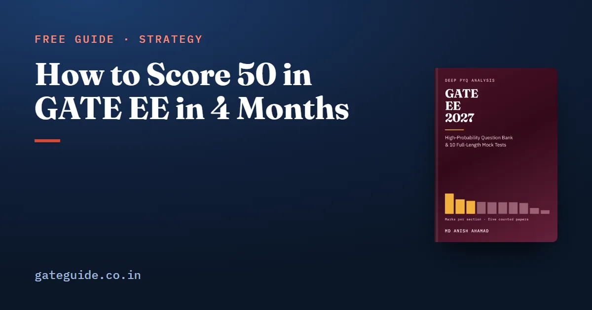

How to Score 50 in GATE EE in 4 Months

To score 50 in GATE EE in four months, build the 50 from marks the counted record says are reliable. Secure General Aptitude's fixed 15 and an Engineering Mathematics block that never fell below 13, then master the topic groups examined in every paper from 2022 to 2026. This guide turns that into a marks plan with three tiers and a month-by-month route. It is a plan, not a promise: no one can guarantee a score.
In this guide
Key takeaways
- General Aptitude was exactly 15 marks in all five counted papers, and Engineering Mathematics never fell below 13.
- Seven core technical topic groups outside mathematics were examined in all five papers, carrying 14.8 marks a paper on average.
- Twelve more groups were examined in four papers, carrying 19.4 marks a paper on average.
- A sensible plan aims a few marks above 50 to absorb MCQ penalties.
- Four months leaves room for depth in the core, not breadth everywhere; read the rest, drill the core.
- Every figure in the plan is a target, labelled as such.
The building blocks of a 50
A secure mark is one from a block that has been present in every counted paper at a steady size. A build mark comes from topics examined in most papers. A stretch mark comes from everything else. The plan collects secure marks first because their supply has never failed.
Here is what the record says each block has offered, counted from the five official papers of 2022 to 2026.
| Block | What the papers offered |
|---|---|
| General Aptitude | 15 marks in every paper |
| Engineering Mathematics | 15, 13, 13, 15, 18 marks; mean 14.8 |
| Seven core technical groups examined 5 of 5 | 74 marks in five papers; 14.8 a paper |
| Twelve groups examined 4 of 5 | 99 marks in five papers; 19.8 a paper |
The seven core technical groups are three-phase induction machines (17 marks), op-amps (14), network transients (11), DC to DC converters (10), economic load dispatch (8), power device characteristics (7), and symmetrical components with fault analysis (7).
Remember: General Aptitude plus Engineering Mathematics has offered about 30 marks in every counted paper. That is more than half your target before any other subject begins.
The marks plan, tier by tier
This is a planning target, not a forecast of your paper.
| Tier | Source | Target |
|---|---|---|
| Secure | General Aptitude | 11 of 15 |
| Secure | Engineering Mathematics | 10 |
| Secure | The seven core technical groups | 9 |
| Build | The twelve four-of-five groups | 13 |
| Stretch | Everything else, including never-asked topics | 10 |
| Planned total | 53 |
Why 53 and not 50? Because MCQ penalties come off the top. Suppose you get three 1-mark MCQs and three 2-mark MCQs wrong:
The buffer is the difference between a plan that reaches 50 on paper and one that reaches it in the hall.
Trap: Do not try to hit 50 from Power Systems and Machines alone. Their combined mean is about 19 marks, and a single paper can swing either by three or four.
Month 1: secure the base
- Engineering Mathematics every day: calculus and vector calculus, then linear algebra, then probability.
- One hour of General Aptitude, twice a week.
- Electric circuits, with network transients to depth, because they reappear inside converter and measurement questions.
- Sit the 2022 paper timed in week two, as a map.
Month 2: master the core technical groups
Work the seven core groups to the point where you can solve an unfamiliar version.
- Induction machines: slip, power split, torque-slip curve, starting and speed control.
- Op-amps: the ideal model and the standard circuits.
- DC to DC converters and power device characteristics.
- Economic load dispatch and fault analysis with symmetrical components.
Mathematics and aptitude keep running. Work the 2023 paper section by section as you finish each topic.
Month 3: build the four-of-five layer
These are the twelve groups examined in four of the five papers. They include differential equations, linear time invariant systems, Fourier series and the Fourier transform, amplifiers, diode circuits, load flow, stability with the equal area criterion, transmission lines, Bode plots, transient and steady-state analysis in Control, and inverters with sinusoidal PWM.
Work the 2024 paper by section. Start reading the thirteen never-asked groups, one or two a week; most are short.
In one line: Secure first, build second, stretch last, and keep mathematics and aptitude running throughout.
Month 4: papers, mocks and the stretch tier
- Sit the 2025 and 2026 papers as full timed tests.
- Add mocks, one every few days, each followed by an evening of analysis.
- Score every paper section by section and log lost marks as misread, wrong method, slip or not known.
- Never leave a NAT blank; it carries no penalty.
- Guess an MCQ only after you have eliminated at least one option.
- In the last week, revise formulas and your error log, and learn nothing new.
A worked check on your progress
At the end of month three, sit a full paper and compare section scores with the plan. Suppose you score 9 in General Aptitude, 8 in Engineering Mathematics and 7 from the core groups. These are made-up figures. Your secure tier is against a target of 30.
That gap of 6 tells you where month four goes. It is better spent closing the secure tier than chasing stretch marks, because the secure blocks appear every year.
What this plan does not promise
Five papers set by five institutes are a small record. A topic examined every time so far could still be light in 2027, and a never-asked topic could appear. The plan handles that by securing the steadiest blocks first and reading everything the syllabus names.
Check your paper's date in the GATE 2027 exam dates guide and count your four months back from it. Use the General Aptitude preparation guide for the secure 15, practise numerical answers on the virtual calculator, and confirm how each answer is scored in the marking scheme common to every GATE paper. The GATE EE 2027 book gives the full topic tables behind each tier and ten mocks to test the plan.
Quick revision
- General Aptitude: 15 marks in every paper; target 11.
- Engineering Mathematics: never below 13; target 10.
- Seven core technical groups examined 5 of 5: 14.8 marks a paper; target 9.
- Twelve groups examined 4 of 5: 19.4 marks a paper; target 13.
- Plan 53 to absorb about 3 marks of MCQ penalty.
- Month by month: base, core, four-of-five layer, papers and mocks.
- A plan, not a promise; confirm everything that can change.
Frequently asked questions
Is 50 marks a good score in GATE EE?
A raw 50 out of 100 is a solid target for most candidates, but what it means for admission or recruitment depends on that year's paper, normalisation and cutoffs, which are published only after the result. Treat 50 as a planning target, check the current notification, and never read it as a guaranteed rank.
Can I score 50 in GATE EE in 4 months?
It is a realistic plan for many candidates who already know their degree subjects, though no plan can promise a score. The route is to secure General Aptitude and Engineering Mathematics, master the topic groups examined in every counted paper, and keep MCQ penalties low. Four months leaves little room for new theory, so stay focused.
Which subjects should I focus on to score 50 in GATE EE?
General Aptitude and Engineering Mathematics first, since together they carried about 30 marks a paper from 2022 to 2026. Then the core topic groups examined in all five papers, such as induction machines, op-amps, network transients, DC to DC converters, economic dispatch and fault analysis. Then the groups examined in four papers.
How much does negative marking affect a GATE EE score of 50?
It can cost several marks if you guess carelessly. A wrong 1-mark MCQ costs one-third of a mark and a wrong 2-mark MCQ costs two-thirds. Three wrong of each costs 3 marks. Plan a small buffer above 50 and guess an MCQ only after eliminating at least one option.
Sources
Dates, fees and the syllabus are set by the GATE 2027 organising institute and can change. Always confirm at gate2027.iitm.ac.in.